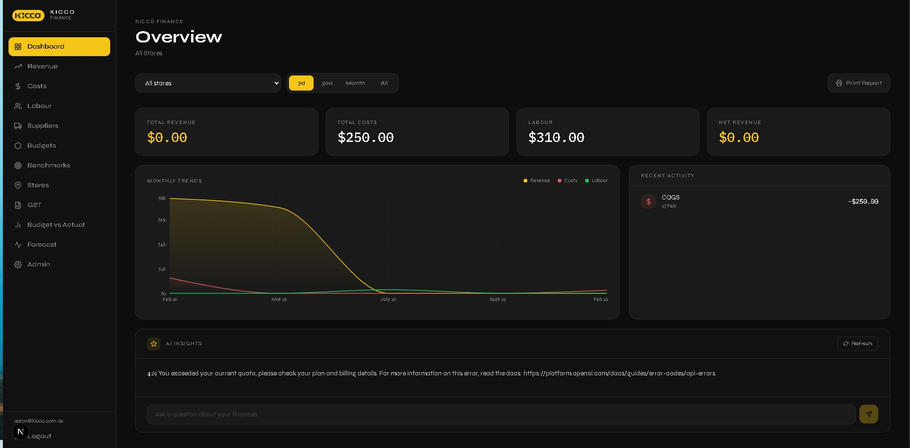

Kicco
Kicco Finance Web App
An end-to-end finance dashboard prototype designed for a family business, focused on improving visibility across revenue, costs, labour, GST, and key business trends through a practical and structured interface.
Status: End-to-end prototype
Dashboard Preview
A practical finance dashboard built for real business visibility.
Designed to present financial and operational data in a clearer, more accessible way, helping create a stronger overview of business performance at a glance.

Key Features
Financial Visibility
Brings together key financial figures into one dashboard view for clearer review and easier understanding.
Business Tracking
Designed to explore how operational and financial data can be structured more effectively within a real business environment.
Practical Interface
Focused on creating a clean, usable interface that feels relevant to day-to-day business use.
Tech Stack
Frontend
Built to present business information through a clean, structured, and user-friendly interface.
System Design
Structured as an end-to-end prototype focused on practical functionality, business clarity, and future refinement.
Data Focus
Designed around making financial and operational data easier to understand, review, and manage.